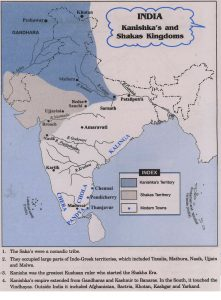

About District Kurukshetra has been described in the first verse of Shrimadbhagvadgita, in the form of Dharmakshetra Kurukshetra. Kurukshetra is a place of great historical and religious significance which is seen with reverence in all the countries due to its association with Vedas and Vedic culture. This is the land on which the battle of Mahabharata was fought and Lord Krishna gave Arjuna a fair knowledge of the philosophy of karma in the Jyotisar. According to the Hindu mythology, Kurukshetra is a vast area spread over 48 kos, which includes many pilgrimage places, temples and sacred ponds, with which many events/rituals associated with the Pandavas and the Kauravas and Mahabharata war have been related. Kurukshetra is closely related to its development with the rise of Aryan civilization and the sacred Saraswati. This is the land where Manusmriti was written by Rishi Manu and the compilation of Rigveda, Samaveda by the wise Rishis . The name of Kurukshetra was named after King Kuru. By which great sacrifices were made for the prosperity of this land and its people. Kurukshetra is as old as the history of India. The history of the area in which Kurukshetra district lies can be traced back, howsoever dimly at times to th e ancient Aryan Past. According to Dr. R.C. Majumdar, “it was a religioncultural centre even before the immigration of the Aryans into India”. The area forming the part of Kurukshetra remained a part of Karnal District at the time of formation of Haryana State. Up to 1947, 5 districts viz. Hissar, Rohtak, Karnal, Ambala and Gurgaon existed in Haryana were the part of Punjab. In 1948 with the creation of PEPSU Mahendragarh district became one of the 19 districts of the then Punjab, and the 6th district in the Haryana Territory. With the creation of Haryana State, Jind district comes into existence on 1st Nov . 1966. Thereafter Bhiwani and Sonipat districts were created on Dec 22, 1972. Karnal District was bifurcated on January 23, 1973, and another district Kurukshetra was carved out. Kurukshetra lies on the main Delhi Ambala Railway line about 160 kilometres North of Delhi, 34 km North of Karnal and 40 km South of Ambala. Kurukshetra is a place known all over India for its great cultural heritage. Markanda and Saraswati are the important rivers of the district. According to Manu, the tract between the old sacred rivers Saraswati and Drishadvati in Kurukshetra was known as Brahmavarta. Kurukshetra along with Karnal and Kaithal districts is known as the ‘Rice Bowl of India’ and famous for Basmati Rice. The soil is generally alluvial, loam and clay do not constitute the average texture of the soil.
Kurukshetra is as old as the history of India. The history of the area in which Kurukshetra district lies can be traced back, howsoever dimly at times to the ancient Aryan Past. According to Dr. R.C. Majumdar, “it was a religion-cultural centre even before the immigration of the Aryans into India”
|  |
Kurukshetra is as old as the history of India. The history of the area in which Kurukshetra district lies can be traced back, howsoever dimly at times to the ancient Aryan Past. According to Dr. R.C. Majumdar, “it was a religion-cultural centre even before the immigration of the Aryans into India”
 |
||
The partition of the country in 1947 led to mass migration of population from Pakistan to India and vice-versa. The biggest refugee camp was established in this town which accommodated the largest number of refugees. This led to rapid growth of the residential colonies & commercial establishments in this area. The area comprising the present district of Kurukshetra was passed on to Haryana on to November, 1st 1966 when it was created as a separate State
The area forming the part of Kurukshetra remained a part of Karnal District at the time of formation of Haryana State. Upto 1947, 5 districts viz. Hissar, Rohtak, Karnal, Ambala and Gurgaon existed in Haryana were the part of Punjab.In 1948 with the creation of PEPSU Mahendragarh district became one of the 19 districts of the then Punjab, and 6th district in the Haryana Territory. With the creatian of Haryana State, Jind district come into existence on 1st Nov. 1966. There after Bhiwani and Sonipat districts were created on Dec 22,1972. Karnal District was bifurcated on Juanuary 23, 1973 and another district Kurukshetra was carved out.
Kurukshetra District was created in the year 1973, with district headquarter at Thanesar town vide Government Notification No. 454-E (iv) – 73/2212 Dated the 23rd January 1973, comprising the tehsil s of Gulha, Kaithal and Thanesar. In 1979, a new tehsil Pehowa was created. During November 1989, some new districts (Panipat, Rewari, Yamunanagar and Kaithal) were formed. In the re-organistion, the territories of Kurkshetra District were also varied.
Radaur block of Kurukshetra district was included in Yamunanagar district, Kaithal and Gulha tehsil s taken of Kurukshetra district, were included in the Kaithal district, which was formed on November 1, 1989. At that time Pehowa was made Sub-Division.As on 31st Dec. 1990 district had 2 Sub-Division (Thanesar & Pehowa), 2 tehsil s (Thanesar & Pehowa), 2 Sub-tehsil s (Shahabad and ladwa). In 1996, a new tehsil Shahabad was created.
In 2011, a new Sub-Division was created vide Letter No. 795-A.R.-I.C.-3-2011/16309 Dated 22.11.2011 & Govt. Gazetted Notification Dated 30.09.2011.
4 Sub-divisions (Thanesar, Pehowa, Shahabad & Ladwa). 4 tehsils (Thanesar, Pehowa & Shahabad, Ladwa) 2 Sub-tehsils (Babain & Ismailabad) 7 Community Development Blocks (Thanesar, Pehowa, Shahabad, Ladwa, Ismailabad, Babain & Pipli). 4 Towns (Thanesar, Pehowa, Shahabad & Ladwa)


content owned by district administration
haryana developed and hosted by shraddha
government of india.
last updated :20 may 2019.